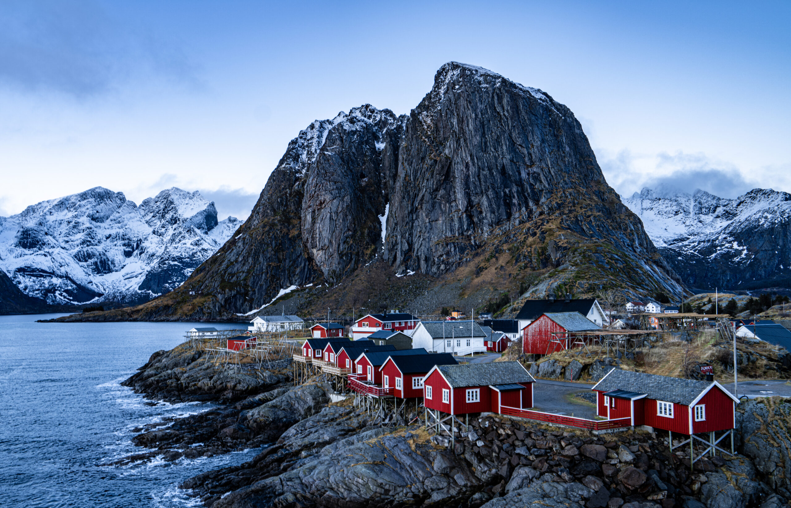
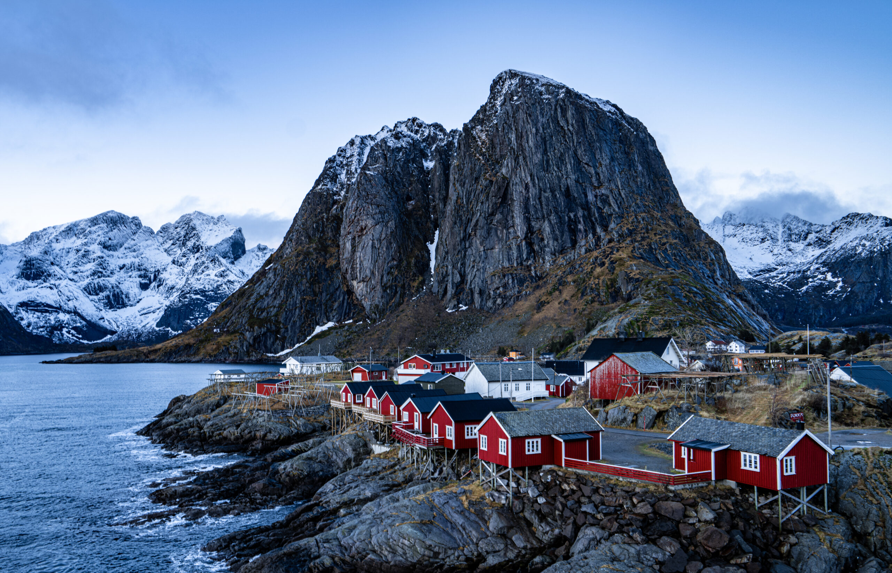

Lofoten lies above the Arctic Circle, yet it experiences
surprisingly mild winters due to the Gulf Stream. This unique
climate makes it one of the warmest regions at its latitude in the
world.
During the summer months, Lofoten experiences the Midnight Sun,
where the sun doesn't set for several weeks. Conversely, in winter,
the Polar Night blankets the region in darkness for weeks at a time.
Lofoten is famous for its jaw-dropping landscapes, featuring rugged
mountains, deep fjords, and white-sand beaches. The peaks rise
dramatically straight out of the ocean.
Lofoten is home to the Lofotr Viking Museum, where you can explore a
reconstructed Viking longhouse, learn about Viking culture, and even
try traditional Viking food.
Lofoten is known for its cod fishing industry, especially during the
winter fishing season when Arctic cod, or skrei, migrate to the
area. Traditional wooden drying racks, where cod is hung to make
stockfish, are an iconic part of the Lofoten landscape.
 
